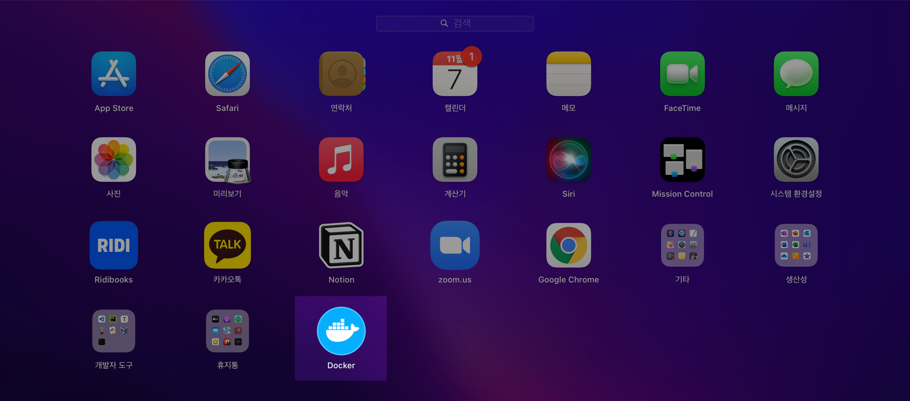
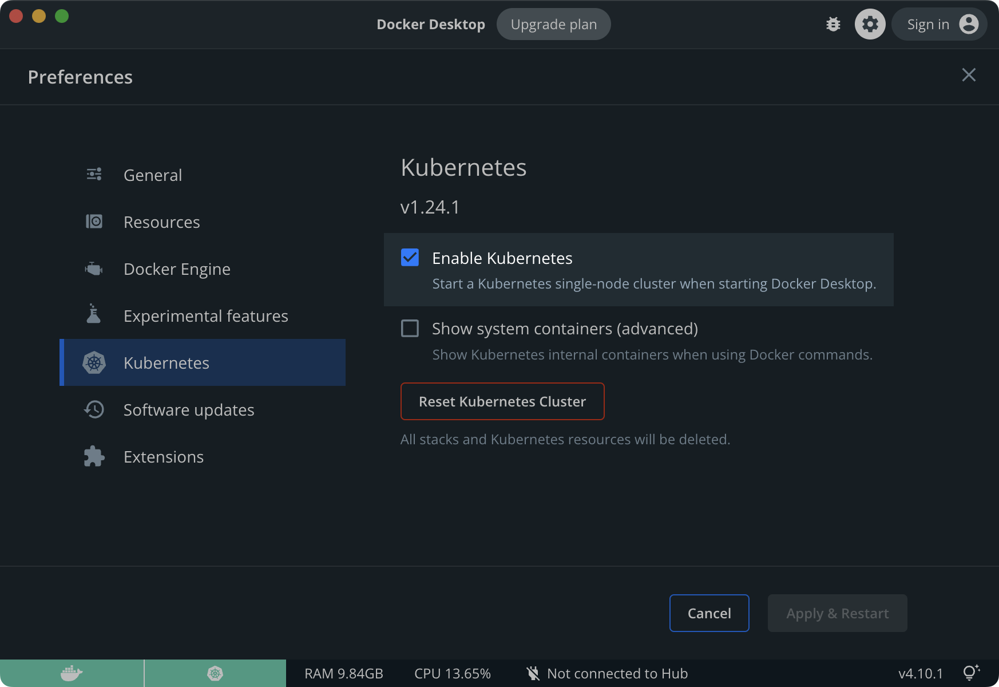
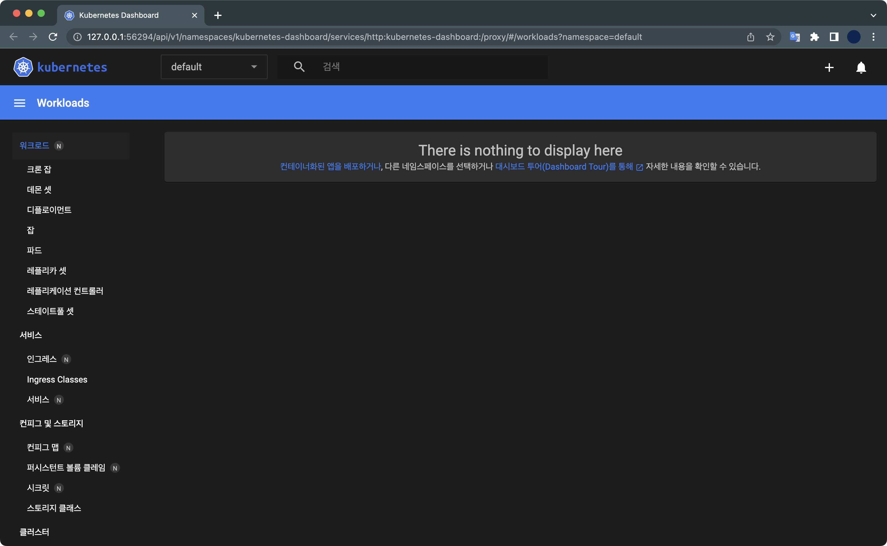
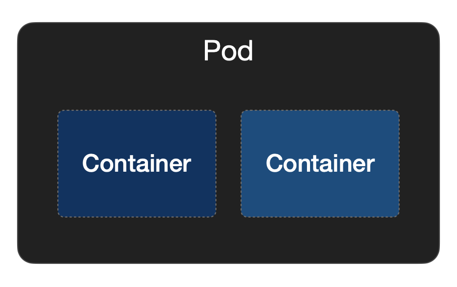
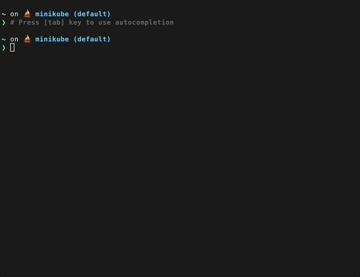

minikube 설치
개요
M1 CPU를 사용하는 macOS에서 minikube를 설치해 kubernetes 실습 환경을 구축합니다.
이 방식은 하이퍼바이저로 Virtual Box나 Vagrant를 사용하지 않고, docker에 minikube를 올리는 방식입니다.
환경
- Hardware : MacBook Pro (16", M1 Pro, 2021)
- OS : macOS Monterey 12.4
- Shell : zsh + oh-my-zsh
- 패키지 관리자 : Homebrew 3.3.2
- 설치대상
- Docker Desktop v4.10.1
- minikube v1.25.2
본문
1. Docker 설치
설치
minikube를 사용하기 위해서는 로컬 머신에 docker desktop을 먼저 설치해야합니다.
macOS용 패키지 관리자인 Homebrew를 이용해 docker를 쉽게 설치할 수 있습니다.
$ brew install --cask docker
==> Downloading https://desktop.docker.com/mac/main/arm64/69879/Docker.dmg
Already downloaded: /Users/ive/Library/Caches/Homebrew/downloads/b5774f18ca8a6d3936c5174f91b93cb1a1a407daa784fe63d9b6300180c7b1ed--Docker.dmg
==> Installing Cask docker
==> Moving App 'Docker.app' to '/Applications/Docker.app'
==> Linking Binary 'docker-compose.bash-completion' to '/opt/homebrew/etc/bash_c
==> Linking Binary 'docker.zsh-completion' to '/opt/homebrew/share/zsh/site-func
==> Linking Binary 'docker.fish-completion' to '/opt/homebrew/share/fish/vendor_
==> Linking Binary 'docker-compose.fish-completion' to '/opt/homebrew/share/fish
==> Linking Binary 'docker-compose.zsh-completion' to '/opt/homebrew/share/zsh/s
==> Linking Binary 'docker.bash-completion' to '/opt/homebrew/etc/bash_completio
🍺 docker was successfully installed!
docker 최초 설치시 오래걸리니 인내심을 갖고 기다립니다.
$ brew list --cask
docker iterm2
cask 목록에 docker가 설치된 걸 확인할 수 있습니다.
런치패드에도 Docker 아이콘이 생성되었습니다.

쿠버네티스 기능 활성화
이제 도커 데스크탑에서 쿠버네티스 기능을 활성화합니다.
minikube 클러스터를 도커 환경에서 생성하고 운영하기 위한 목적입니다.
상단바 → Docker Desktop 아이콘 → Preferences

Containers / Apps → Enable Kubernetes 체크 → Apply & Restart

쿠버네티스 기능 활성화를 설정하는 과정에서 문제가 발생할 경우, Docker 공식문서를 참고하세요.
2. minikube 설치
docker desktop 설치가 완료된 후 minikube를 설치합니다.
$ brew install minikube
...
==> Summary
🍺 /opt/homebrew/Cellar/minikube/1.25.2: 9 files, 70.3MB
==> Running `brew cleanup minikube`...
Disable this behaviour by setting HOMEBREW_NO_INSTALL_CLEANUP.
Hide these hints with HOMEBREW_NO_ENV_HINTS (see `man brew`).
minikube v1.25.2 버전이 설치 완료되었습니다.
$ minikube version
minikube version: v1.25.2
commit: 362d5fdc0a3dbee389b3d3f1034e8023e72bd3a7
버전 확인 명령어가 잘 실행되는지 확인합니다.
3. 쿠버네티스 클러스터 생성
로컬에 1대의 노드로 구성된 쿠버네티스 클러스터를 생성합니다.
$ minikube start \
--cni='calico' \
--driver='docker' \
--nodes=1 \
--kubernetes-version='stable'
명령어 옵션 설명
--cni : 컨테이너 네트워크 인터페이스를 지정합니다.
--driver : 쿠버네티스 클러스터를 구동할 하이퍼바이저를 지정합니다.
--nodes : 생성할 쿠버네티스 노드 수량. 기본값은 1대입니다.
--kubernetes-version : 생성되는 노드의 쿠버네티스 버전을 지정합니다.
minikube 클러스터가 정상적으로 생성된 경우, 다음과 같은 아웃풋이 출력됩니다.
😄 Darwin 12.4 (arm64) 의 minikube v1.25.2
✨ 유저 환경 설정 정보에 기반하여 docker 드라이버를 사용하는 중
👍 minikube 클러스터의 minikube 컨트롤 플레인 노드를 시작하는 중
🚜 베이스 이미지를 다운받는 중 ...
🔥 Creating docker container (CPUs=2, Memory=7903MB) ...
🐳 쿠버네티스 v1.23.3 을 Docker 20.10.12 런타임으로 설치하는 중
▪ kubelet.housekeeping-interval=5m
▪ 인증서 및 키를 생성하는 중 ...
▪ 컨트롤 플레인이 부팅...
▪ RBAC 규칙을 구성하는 중 ...
🔗 Configuring Calico (Container Networking Interface) ...
🔎 Kubernetes 구성 요소를 확인...
▪ Using image gcr.io/k8s-minikube/storage-provisioner:v5
🌟 애드온 활성화 : storage-provisioner, default-storageclass
🏄 끝났습니다! kubectl이 "minikube" 클러스터와 "default" 네임스페이스를 기본적으로 사용하도록 구성되었습니다.
쿠버네티스 클러스터가 생성된 걸 확인할 수 있습니다.
쿠버네티스 노드의 상태를 확인할 수 있습니다.
$ minikube status
minikube
type: Control Plane
host: Running
kubelet: Running
apiserver: Running
kubeconfig: Configured
Profile로 환경을 나눠서 여러개의 minikube 클러스터를 동시에 사용할 수도 있습니다.
Profile 이름을 지정하지 않을 경우 기본 Profile인 minikube가 생성됩니다.
$ minikube profile list
|----------|-----------|---------|--------------|------|---------|---------|-------|--------|
| Profile | VM Driver | Runtime | IP | Port | Version | Status | Nodes | Active |
|----------|-----------|---------|--------------|------|---------|---------|-------|--------|
| minikube | docker | docker | 192.168.49.2 | 8443 | v1.24.1 | Running | 1 | * |
|----------|-----------|---------|--------------|------|---------|---------|-------|--------|
4. minikube 상태 확인
docker 확인
도커 컨테이너로 실행되는 minikube 노드를 확인합니다.
$ docker ps
CONTAINER ID IMAGE COMMAND CREATED STATUS PORTS NAMES
a4eda4df4ff2 gcr.io/k8s-minikube/kicbase:v0.0.32 "/usr/local/bin/entr…" 28 seconds ago Up 27 seconds 0.0.0.0:56021->22/tcp, 0.0.0.0:56022->2376/tcp, 0.0.0.0:56026->5000/tcp, 0.0.0.0:56027->8443/tcp, 0.0.0.0:56023->32443/tcp minikube
여기서 결국 minikube 클러스터를 구성하는 노드의 실체는 도커 컨테이너라는 사실을 알 수 있습니다.
minikube dashboard 확인
minikube를 설치하면 기본적으로 dashboard가 비활성화되어 있습니다.
$ minikube addons list
|-----------------------------|----------|--------------|--------------------------------|
| ADDON NAME | PROFILE | STATUS | MAINTAINER |
|-----------------------------|----------|--------------|--------------------------------|
| ambassador | minikube | disabled | third-party (ambassador) |
| auto-pause | minikube | disabled | google |
| csi-hostpath-driver | minikube | disabled | kubernetes |
| dashboard | minikube | disabled | kubernetes |
| default-storageclass | minikube | enabled ✅ | kubernetes |
| efk | minikube | disabled | third-party (elastic) |
| freshpod | minikube | disabled | google |
| gcp-auth | minikube | disabled | google |
| gvisor | minikube | disabled | google |
| helm-tiller | minikube | disabled | third-party (helm) |
| ingress | minikube | disabled | unknown (third-party) |
| ingress-dns | minikube | disabled | google |
| istio | minikube | disabled | third-party (istio) |
| istio-provisioner | minikube | disabled | third-party (istio) |
| kong | minikube | disabled | third-party (Kong HQ) |
| kubevirt | minikube | disabled | third-party (kubevirt) |
| logviewer | minikube | disabled | unknown (third-party) |
| metallb | minikube | disabled | third-party (metallb) |
| metrics-server | minikube | disabled | kubernetes |
| nvidia-driver-installer | minikube | disabled | google |
| nvidia-gpu-device-plugin | minikube | disabled | third-party (nvidia) |
| olm | minikube | disabled | third-party (operator |
| | | | framework) |
| pod-security-policy | minikube | disabled | unknown (third-party) |
| portainer | minikube | disabled | portainer.io |
| registry | minikube | disabled | google |
| registry-aliases | minikube | disabled | unknown (third-party) |
| registry-creds | minikube | disabled | third-party (upmc enterprises) |
| storage-provisioner | minikube | enabled ✅ | google |
| storage-provisioner-gluster | minikube | disabled | unknown (third-party) |
| volumesnapshots | minikube | disabled | kubernetes |
|-----------------------------|----------|--------------|--------------------------------|
기본 비활성화 되어 있는 kubernetes dashboard 애드온을 활성화 합니다.
$ minikube dashboard
🔌 대시보드를 활성화하는 중 ...
▪ Using image kubernetesui/dashboard:v2.3.1
▪ Using image kubernetesui/metrics-scraper:v1.0.7
🤔 Verifying dashboard health ...
🚀 프록시를 시작하는 중 ...
🤔 Verifying proxy health ...
🎉 Opening http://127.0.0.1:62073/api/v1/namespaces/kubernetes-dashboard/services/http:kubernetes-dashboard:/proxy/ in your default browser...
자동으로 브라우저 창이 열리면서 Kubernetes dashboard로 이동됩니다.
아직 아무것도 배포하지 않은 초기화 상태의 클러스터라 표시할 내용이 없습니다.

쿠버네티스 노드 정보를 확인합니다.
$ kubectl get node -o wide
NAME STATUS ROLES AGE VERSION INTERNAL-IP EXTERNAL-IP OS-IMAGE KERNEL-VERSION CONTAINER-RUNTIME
minikube Ready control-plane 8m36s v1.24.1 192.168.49.2 <none> Ubuntu 20.04.4 LTS 5.10.104-linuxkit docker://20.10.17
control-plane 노드 1대가 실행중입니다. 해당 노드의 쿠버네티스 버전은 v1.24.1이고 CRI는 dockershim(docker://20.10.17)을 사용중입니다.
노드가 1대일 경우 control-plane 역할과 worker node 역할을 같이 수행하게 됩니다.
5. 테스트 pod 생성
파드
파드Pod는 쿠버네티스에서 가장 최소한의 오브젝트 단위입니다.
1개의 파드는 최소 1개 이상의 컨테이너Container로 구성됩니다.

YAML 작성
현재 경로에 sample-pod.yaml 파일을 생성합니다.
$ cat << EOF > ./sample-pod.yaml
apiVersion: v1
kind: Pod
metadata:
name: myapp-pod
labels:
app: myapp
spec:
containers:
- name: myapp-container
image: busybox
command: ['sh', '-c', 'echo Hello Kubernetes! && sleep 3600']
EOF
sample-pod.yaml은 1개의 파드를 배포하는 매니페스트입니다.
파드에 들어있는 busybox 컨테이너는 Hello Kubernetes! 메세지를 출력하고 3600초 후 종료되도록 동작합니다.
작성한 매니페스트를 사용해서 파드를 배포합니다.
$ kubectl apply -f sample-pod.yaml
pod/myapp-pod created
6. 파드 동작 확인
파드 상태를 확인합니다.
$ kubectl get pod -o wide
NAME READY STATUS RESTARTS AGE IP NODE NOMINATED NODE READINESS GATES
myapp-pod 1/1 Running 0 67s 172.17.0.11 minikube <none> <none>
myapp-pod가 정상 동작중인 걸 확인할 수 있습니다.
파드의 로그를 확인합니다.
$ kubectl logs pod/myapp-pod
Hello Kubernetes!
yaml 파일에 작성한대로 myapp-pod가 Hello Kubernetes!를 출력했습니다.
실습환경 정리
방법 1. 클러스터 종료
쿠버네티스 클러스터를 종료합니다.
중요: 클러스터 삭제가 아니라 종료이기 때문에 생성한 클러스터와 리소스는 보존됩니다.
언제든지 minikube start 명령어로 클러스터를 재시작하면 모든 리소스는 다시 복구됩니다.
리소스 삭제하기
모든 pod를 삭제합니다.
$ kubectl delete pod --all
pod "myapp-pod" deleted
myapp-pod가 삭제되었습니다.
$ kubectl get pod -o wide
No resources found in default namespace.
파드를 삭제한 후 아무런 pod도 조회되지 않습니다.
모든 파드가 정상적으로 삭제되었습니다.
클러스터 종료
minikube 클러스터를 종료합니다.
클러스터를 종료한다고 해서 배포했던 리소스들이 삭제되지 않고 다시 시작했을 때 그대로 보존됩니다.
$ minikube stop
✋ Stopping node "minikube" ...
🛑 Powering off "minikube" via SSH ...
🛑 1 node stopped.
다음에 minikube 클러스터를 다시 시작하고 싶다면 minikube start 명령어를 실행하면 됩니다.
$ minikube status
minikube
type: Control Plane
host: Stopped
kubelet: Stopped
apiserver: Stopped
kubeconfig: Stopped
minikube 클러스터가 중지된 상태Stopped입니다.
방법 2. 클러스터 삭제
minikube 클러스터와 그 안에 생성된 모든 리소스를 제거합니다.
클러스터 삭제
삭제하기 전에 프로파일을 확인합니다.
$ minikube profile list
|----------|-----------|---------|--------------|------|---------|---------|-------|
| Profile | VM Driver | Runtime | IP | Port | Version | Status | Nodes |
|----------|-----------|---------|--------------|------|---------|---------|-------|
| minikube | docker | docker | 192.168.49.2 | 8443 | v1.23.3 | Running | 1 |
|----------|-----------|---------|--------------|------|---------|---------|-------|
디폴트 프로파일인 minikube의 클러스터를 삭제합니다.
$ minikube delete
🔥 docker 의 "minikube" 를 삭제하는 중 ...
🔥 Deleting container "minikube" ...
🔥 /Users/steve/.minikube/machines/minikube 제거 중 ...
💀 "minikube" 클러스터 관련 정보가 모두 삭제되었습니다
결과 확인
클러스터 삭제가 완료된 후 아래 명령어로 프로파일 목록을 확인합니다.
$ minikube profile list
🤹 Exiting due to MK_USAGE_NO_PROFILE: No minikube profile was found.
💡 권장:
You can create one using 'minikube start'.
minikube 프로파일이 삭제되어 조회되지 않는 걸 확인할 수 있습니다.
kubectl 명령어로 쿠버네티스 노드를 확인해도 결과는 마찬가지입니다.
$ kubectl get node
The connection to the server localhost:8080 was refused - did you specify the right host or port?
모든 실습환경이 정리되었습니다.
더 나아가서
멀티노드 구성하기
싱글 노드가 아닌 여러 대의 노드로 구성된 클러스터에서 실습해보고 싶다면 아래 글도 읽어보는 걸 추천합니다.
자동완성 설정
minikube 명령어의 자동완성 기능을 영구적으로 설정하는 방법입니다.
쉘 설정파일에 minikube 자동완성 기능을 디폴트로 사용하도록 설정 내용을 추가합니다.
사용자가 사용하는 쉘 종류에 따라서 설정 방법이 약간씩 다릅니다.
# for zsh users
$ cat << EOF >> ~/.zshrc
# minikube autocompletion
source <(minikube completion zsh)
EOF
# for bash users
$ cat << EOF >> ~/.bashrc
# minikube autocompletion
source <(minikube completion bash)
EOF
새로 추가한 minikube completion 설정 내용을 바로 적용하기 위해서 아래 명령어를 실행합니다.
# for zsh users
$ source ~/.zshrc
# for bash users
$ source ~/.bashrc
또는 현재 사용중인 터미널을 닫았다가 열어도 적용됩니다.
이제 minikube 명령어를 사용할 때 tab키를 이용해서 어떤 명령어와 옵션이 있는지 실시간으로 확인할 수 있습니다.
